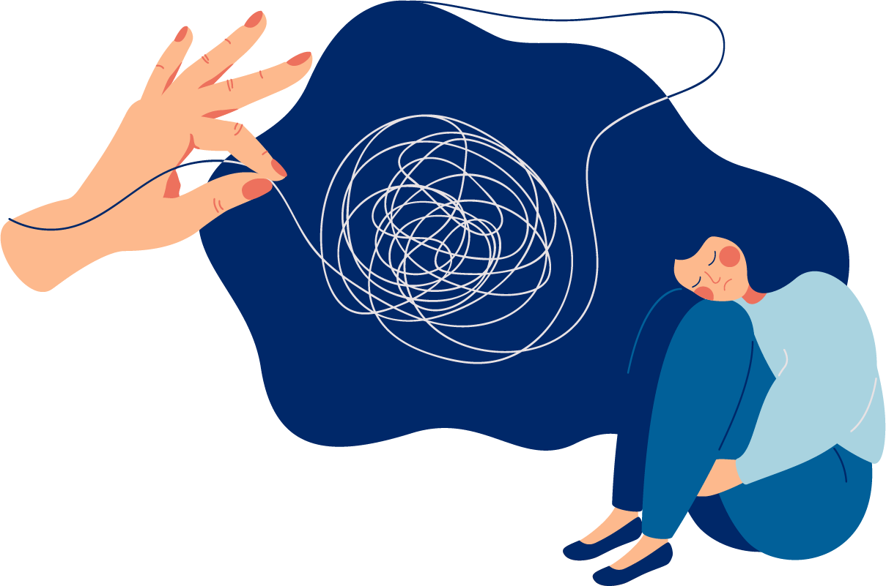

If you are in crisis, having suicidal thoughts, or attempting suicide, contact emergency resources immediately.
National Suicide Prevention Lifeline: 988 or 1-800-273-TALK (8255) - 988lifeline.org
Crisis Text Line: Text HOME to 741741 - crisistextline.org
SAMHSA National Helpline: 1-800-662-HELP (4357)
Veterans Crisis Line: 988, Press 1 or text 838255
United Kingdom (Samaritans): 116 123 - samaritans.org
Canada (Talk Suicide Canada): 1-833-456-4566 or text 45645
Australia (Lifeline): 13 11 14 - lifeline.org.au
National Alliance on Mental Illness (NAMI)
The Trevor Project (LGBTQ+ Crisis Support) - 1-866-488-7386 or text START to 678678